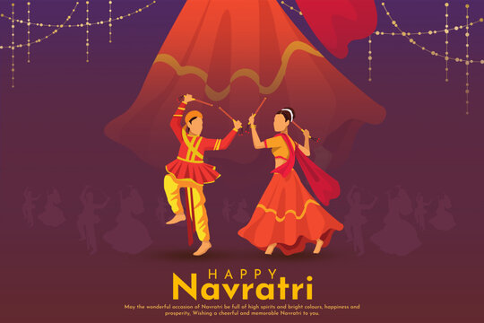

Dance4u
Navratri 2023


Who doesn’t love a Garba Night? Even employees have been waiting for it. It will be an outstanding
plan
indeed during Navratri. Dandiya and Garba is a famous dance form in Gujrat during celebrating
Navratri.
You can arrange a dandiya event for employees or plan for some dandiya competition within
departments.
It’s a lively and interactive way to celebrate the festival, promote team bonding, and create
lasting
memories among colleagues. Serving refreshments during the Dandiya Night celebration will also help
sweeten the evening.